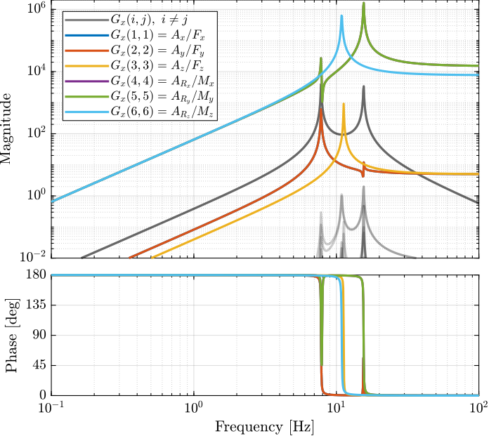
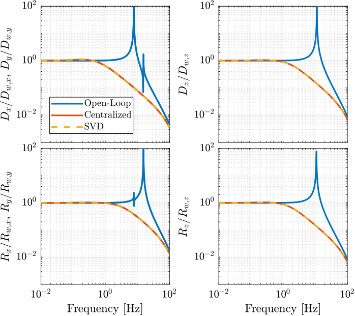

SVD Control
Table of Contents
- 1. Gravimeter - Simscape Model
- 2. Stewart Platform - Simscape Model
- 2.1. Jacobian
- 2.2. Simscape Model
- 2.3. Identification of the plant
- 2.4. Obtained Dynamics
- 2.5. Real Approximation of \(G\) at the decoupling frequency
- 2.6. Verification of the decoupling using the “Gershgorin Radii”
- 2.7. Decoupled Plant
- 2.8. Diagonal Controller
- 2.9. Centralized Control
- 2.10. SVD Control
- 2.11. Results
- 3. Stewart Platform - Analytical Model
- 3.1. Characteristics
- 3.2. Mass Matrix
- 3.3. Jacobian Matrix
- 3.4. Stifnness matrix and Damping matrix
- 3.5. State Space System
- 3.6. Transmissibility
- 3.7. Real approximation of \(G(j\omega)\) at decoupling frequency
- 3.8. Coupled and Decoupled Plant “Gershgorin Radii”
- 3.9. Decoupled Plant
- 3.10. Controller
- 3.11. Closed Loop System
- 3.12. Results
1 Gravimeter - Simscape Model
1.1 Simulink
open('gravimeter.slx')
%% Name of the Simulink File
mdl = 'gravimeter';
%% Input/Output definition
clear io; io_i = 1;
io(io_i) = linio([mdl, '/F1'], 1, 'openinput'); io_i = io_i + 1;
io(io_i) = linio([mdl, '/F2'], 1, 'openinput'); io_i = io_i + 1;
io(io_i) = linio([mdl, '/F3'], 1, 'openinput'); io_i = io_i + 1;
io(io_i) = linio([mdl, '/Acc_side'], 1, 'openoutput'); io_i = io_i + 1;
io(io_i) = linio([mdl, '/Acc_side'], 2, 'openoutput'); io_i = io_i + 1;
io(io_i) = linio([mdl, '/Acc_top'], 1, 'openoutput'); io_i = io_i + 1;
io(io_i) = linio([mdl, '/Acc_top'], 2, 'openoutput'); io_i = io_i + 1;
G = linearize(mdl, io);
G.InputName = {'F1', 'F2', 'F3'};
G.OutputName = {'Ax1', 'Az1', 'Ax2', 'Az2'};
The plant as 6 states as expected (2 translations + 1 rotation)
size(G)
State-space model with 4 outputs, 3 inputs, and 6 states.

Figure 1: Open Loop Transfer Function from 3 Actuators to 4 Accelerometers
2 Stewart Platform - Simscape Model
2.1 Jacobian
First, the position of the “joints” (points of force application) are estimated and the Jacobian computed.
open('stewart_platform/drone_platform_jacobian.slx');
sim('drone_platform_jacobian');
Aa = [a1.Data(1,:);
a2.Data(1,:);
a3.Data(1,:);
a4.Data(1,:);
a5.Data(1,:);
a6.Data(1,:)]';
Ab = [b1.Data(1,:);
b2.Data(1,:);
b3.Data(1,:);
b4.Data(1,:);
b5.Data(1,:);
b6.Data(1,:)]';
As = (Ab - Aa)./vecnorm(Ab - Aa);
l = vecnorm(Ab - Aa)';
J = [As' , cross(Ab, As)'];
save('./jacobian.mat', 'Aa', 'Ab', 'As', 'l', 'J');
2.2 Simscape Model
open('stewart_platform/drone_platform.slx');
Definition of spring parameters
kx = 50; % [N/m] ky = 50; kz = 50; cx = 0.025; % [Nm/rad] cy = 0.025; cz = 0.025;
We load the Jacobian.
load('./jacobian.mat', 'Aa', 'Ab', 'As', 'l', 'J');
2.3 Identification of the plant
The dynamics is identified from forces applied by each legs to the measured acceleration of the top platform.
%% Name of the Simulink File
mdl = 'drone_platform';
%% Input/Output definition
clear io; io_i = 1;
io(io_i) = linio([mdl, '/Dw'], 1, 'openinput'); io_i = io_i + 1;
io(io_i) = linio([mdl, '/u'], 1, 'openinput'); io_i = io_i + 1;
io(io_i) = linio([mdl, '/Inertial Sensor'], 1, 'openoutput'); io_i = io_i + 1;
G = linearize(mdl, io);
G.InputName = {'Dwx', 'Dwy', 'Dwz', 'Rwx', 'Rwy', 'Rwz', ...
'F1', 'F2', 'F3', 'F4', 'F5', 'F6'};
G.OutputName = {'Ax', 'Ay', 'Az', 'Arx', 'Ary', 'Arz'};
There are 24 states (6dof for the bottom platform + 6dof for the top platform).
size(G)
State-space model with 6 outputs, 12 inputs, and 24 states.
% G = G*blkdiag(inv(J), eye(6));
% G.InputName = {'Dw1', 'Dw2', 'Dw3', 'Dw4', 'Dw5', 'Dw6', ...
% 'F1', 'F2', 'F3', 'F4', 'F5', 'F6'};
Thanks to the Jacobian, we compute the transfer functions in the frame of the legs and in an inertial frame.
Gx = G*blkdiag(eye(6), inv(J'));
Gx.InputName = {'Dwx', 'Dwy', 'Dwz', 'Rwx', 'Rwy', 'Rwz', ...
'Fx', 'Fy', 'Fz', 'Mx', 'My', 'Mz'};
Gl = J*G;
Gl.OutputName = {'A1', 'A2', 'A3', 'A4', 'A5', 'A6'};
2.4 Obtained Dynamics

Figure 2: Stewart Platform Plant from forces applied by the legs to the acceleration of the platform

Figure 3: Stewart Platform Plant from torques applied by the legs to the angular acceleration of the platform

Figure 4: Stewart Platform Plant from forces applied by the legs to displacement of the legs

Figure 5: Transmissibility
2.5 Real Approximation of \(G\) at the decoupling frequency
Let’s compute a real approximation of the complex matrix \(H_1\) which corresponds to the the transfer function \(G_c(j\omega_c)\) from forces applied by the actuators to the measured acceleration of the top platform evaluated at the frequency \(\omega_c\).
wc = 2*pi*20; % Decoupling frequency [rad/s]
Gc = G({'Ax', 'Ay', 'Az', 'Arx', 'Ary', 'Arz'}, ...
{'F1', 'F2', 'F3', 'F4', 'F5', 'F6'}); % Transfer function to find a real approximation
H1 = evalfr(Gc, j*wc);
The real approximation is computed as follows:
D = pinv(real(H1'*H1)); H1 = inv(D*real(H1'*diag(exp(j*angle(diag(H1*D*H1.'))/2))));
2.6 Verification of the decoupling using the “Gershgorin Radii”
First, the Singular Value Decomposition of \(H_1\) is performed: \[ H_1 = U \Sigma V^H \]
[U,S,V] = svd(H1);
Then, the “Gershgorin Radii” is computed for the plant \(G_c(s)\) and the “SVD Decoupled Plant” \(G_d(s)\): \[ G_d(s) = U^T G_c(s) V \]
This is computed over the following frequencies.
freqs = logspace(-2, 2, 1000); % [Hz]
Gershgorin Radii for the coupled plant:
Gr_coupled = zeros(length(freqs), size(Gc,2));
H = abs(squeeze(freqresp(Gc, freqs, 'Hz')));
for out_i = 1:size(Gc,2)
Gr_coupled(:, out_i) = squeeze((sum(H(out_i,:,:)) - H(out_i,out_i,:))./H(out_i, out_i, :));
end
Gershgorin Radii for the decoupled plant using SVD:
Gd = U'*Gc*V;
Gr_decoupled = zeros(length(freqs), size(Gd,2));
H = abs(squeeze(freqresp(Gd, freqs, 'Hz')));
for out_i = 1:size(Gd,2)
Gr_decoupled(:, out_i) = squeeze((sum(H(out_i,:,:)) - H(out_i,out_i,:))./H(out_i, out_i, :));
end
Gershgorin Radii for the decoupled plant using the Jacobian:
Gj = Gc*inv(J');
Gr_jacobian = zeros(length(freqs), size(Gj,2));
H = abs(squeeze(freqresp(Gj, freqs, 'Hz')));
for out_i = 1:size(Gj,2)
Gr_jacobian(:, out_i) = squeeze((sum(H(out_i,:,:)) - H(out_i,out_i,:))./H(out_i, out_i, :));
end

Figure 6: Gershgorin Radii of the Coupled and Decoupled plants
2.7 Decoupled Plant
Let’s see the bode plot of the decoupled plant \(G_d(s)\). \[ G_d(s) = U^T G_c(s) V \]

Figure 7: Decoupled Plant using SVD

Figure 8: Decoupled Plant using the Jacobian
2.8 Diagonal Controller
The controller \(K\) is a diagonal controller consisting a low pass filters with a crossover frequency \(\omega_c\) and a DC gain \(C_g\).
wc = 2*pi*0.1; % Crossover Frequency [rad/s] C_g = 50; % DC Gain K = eye(6)*C_g/(s+wc);
2.9 Centralized Control
The control diagram for the centralized control is shown below.
The controller \(K_c\) is “working” in an cartesian frame. The Jacobian is used to convert forces in the cartesian frame to forces applied by the actuators.

G_cen = feedback(G, inv(J')*K, [7:12], [1:6]);
2.10 SVD Control
The SVD control architecture is shown below. The matrices \(U\) and \(V\) are used to decoupled the plant \(G\).

SVD Control
G_svd = feedback(G, pinv(V')*K*pinv(U), [7:12], [1:6]);
2.11 Results
Let’s first verify the stability of the closed-loop systems:
isstable(G_cen)
ans = logical 1
isstable(G_svd)
ans = logical 1
The obtained transmissibility in Open-loop, for the centralized control as well as for the SVD control are shown in Figure 11.

Figure 11: Obtained Transmissibility
3 Stewart Platform - Analytical Model
3.1 Characteristics
L = 0.055; Zc = 0; m = 0.2; k = 1e3; c = 2*0.1*sqrt(k*m); Rx = 0.04; Rz = 0.04; Ix = m*Rx^2; Iy = m*Rx^2; Iz = m*Rz^2;
3.2 Mass Matrix
M = m*[1 0 0 0 Zc 0;
0 1 0 -Zc 0 0;
0 0 1 0 0 0;
0 -Zc 0 Rx^2+Zc^2 0 0;
Zc 0 0 0 Rx^2+Zc^2 0;
0 0 0 0 0 Rz^2];
3.3 Jacobian Matrix
Bj=1/sqrt(6)*[ 1 1 -2 1 1 -2;
sqrt(3) -sqrt(3) 0 sqrt(3) -sqrt(3) 0;
sqrt(2) sqrt(2) sqrt(2) sqrt(2) sqrt(2) sqrt(2);
0 0 L L -L -L;
-L*2/sqrt(3) -L*2/sqrt(3) L/sqrt(3) L/sqrt(3) L/sqrt(3) L/sqrt(3);
L*sqrt(2) -L*sqrt(2) L*sqrt(2) -L*sqrt(2) L*sqrt(2) -L*sqrt(2)];
3.4 Stifnness matrix and Damping matrix
kv = k/3; % [N/m] kh = 0.5*k/3; % [N/m] K = diag([3*kh,3*kh,3*kv,3*kv*Rx^2/2,3*kv*Rx^2/2,3*kh*Rx^2]); % Stiffness Matrix C = c*K/100000; % Damping Matrix
3.5 State Space System
A = [zeros(6) eye(6); -M\K -M\C]; Bw = [zeros(6); -eye(6)]; Bu = [zeros(6); M\Bj]; Co = [-M\K -M\C]; D = [zeros(6) M\Bj]; ST = ss(A,[Bw Bu],Co,D);
- OUT 1-6: 6 dof
- IN 1-6 : ground displacement in the directions of the legs
- IN 7-12: forces in the actuators.
ST.StateName = {'x';'y';'z';'theta_x';'theta_y';'theta_z';...
'dx';'dy';'dz';'dtheta_x';'dtheta_y';'dtheta_z'};
ST.InputName = {'w1';'w2';'w3';'w4';'w5';'w6';...
'u1';'u2';'u3';'u4';'u5';'u6'};
ST.OutputName = {'ax';'ay';'az';'atheta_x';'atheta_y';'atheta_z'};
3.6 Transmissibility
TR=ST*[eye(6); zeros(6)];
figure subplot(231) bodemag(TR(1,1),opts); subplot(232) bodemag(TR(2,2),opts); subplot(233) bodemag(TR(3,3),opts); subplot(234) bodemag(TR(4,4),opts); subplot(235) bodemag(TR(5,5),opts); subplot(236) bodemag(TR(6,6),opts);

Figure 12: Transmissibility
3.7 Real approximation of \(G(j\omega)\) at decoupling frequency
sys1 = ST*[zeros(6); eye(6)]; % take only the forces inputs
dec_fr = 20;
H1 = evalfr(sys1,j*2*pi*dec_fr);
H2 = H1;
D = pinv(real(H2'*H2));
H1 = inv(D*real(H2'*diag(exp(j*angle(diag(H2*D*H2.'))/2)))) ;
[U,S,V] = svd(H1);
wf = logspace(-1,2,1000);
for i = 1:length(wf)
H = abs(evalfr(sys1,j*2*pi*wf(i)));
H_dec = abs(evalfr(U'*sys1*V,j*2*pi*wf(i)));
for j = 1:size(H,2)
g_r1(i,j) = (sum(H(j,:))-H(j,j))/H(j,j);
g_r2(i,j) = (sum(H_dec(j,:))-H_dec(j,j))/H_dec(j,j);
% keyboard
end
g_lim(i) = 0.5;
end
3.8 Coupled and Decoupled Plant “Gershgorin Radii”
figure;
title('Coupled plant')
loglog(wf,g_r1(:,1),wf,g_r1(:,2),wf,g_r1(:,3),wf,g_r1(:,4),wf,g_r1(:,5),wf,g_r1(:,6),wf,g_lim,'--');
legend('$a_x$','$a_y$','$a_z$','$\theta_x$','$\theta_y$','$\theta_z$','Limit');
xlabel('Frequency (Hz)'); ylabel('Gershgorin Radii')

Figure 13: Gershorin Raddi for the coupled plant
figure;
title('Decoupled plant (10 Hz)')
loglog(wf,g_r2(:,1),wf,g_r2(:,2),wf,g_r2(:,3),wf,g_r2(:,4),wf,g_r2(:,5),wf,g_r2(:,6),wf,g_lim,'--');
legend('$S_1$','$S_2$','$S_3$','$S_4$','$S_5$','$S_6$','Limit');
xlabel('Frequency (Hz)'); ylabel('Gershgorin Radii')

Figure 14: Gershorin Raddi for the decoupled plant
3.9 Decoupled Plant
figure; bodemag(U'*sys1*V,opts)

Figure 15: Decoupled Plant
3.10 Controller
fc = 2*pi*0.1; % Crossover Frequency [rad/s] c_gain = 50; % cont = eye(6)*c_gain/(s+fc);
3.11 Closed Loop System
FEEDIN = [7:12]; % Input of controller FEEDOUT = [1:6]; % Output of controller
Centralized Control
STcen = feedback(ST, inv(Bj)*cont, FEEDIN, FEEDOUT); TRcen = STcen*[eye(6); zeros(6)];
SVD Control
STsvd = feedback(ST, pinv(V')*cont*pinv(U), FEEDIN, FEEDOUT); TRsvd = STsvd*[eye(6); zeros(6)];
3.12 Results
figure
subplot(231)
bodemag(TR(1,1),TRcen(1,1),TRsvd(1,1),opts)
legend('OL','Centralized','SVD')
subplot(232)
bodemag(TR(2,2),TRcen(2,2),TRsvd(2,2),opts)
legend('OL','Centralized','SVD')
subplot(233)
bodemag(TR(3,3),TRcen(3,3),TRsvd(3,3),opts)
legend('OL','Centralized','SVD')
subplot(234)
bodemag(TR(4,4),TRcen(4,4),TRsvd(4,4),opts)
legend('OL','Centralized','SVD')
subplot(235)
bodemag(TR(5,5),TRcen(5,5),TRsvd(5,5),opts)
legend('OL','Centralized','SVD')
subplot(236)
bodemag(TR(6,6),TRcen(6,6),TRsvd(6,6),opts)
legend('OL','Centralized','SVD')

Figure 16: Comparison of the obtained transmissibility for the centralized control and the SVD control